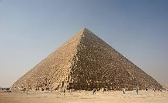
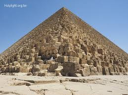
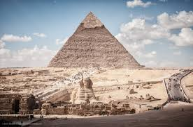
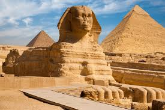
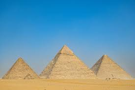
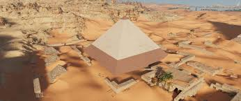
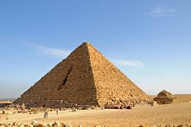

埃及的吉薩金字塔群
歷史資料
吉薩金字塔群（阿拉伯語：أهرام الجيزة）是指一片埃及吉薩的陵墓群，於1979年登入聯合國教科文組織世界遺產，於2007年7月7日獲選為世界新七大奇蹟中的榮譽奇蹟。
陵墓群建於埃及第四王朝，主要由三個金字塔組成，而當中最大的是古夫金字塔（又稱「大金字塔」），同時也是古代世界七大奇蹟中最古老及唯一尚存的建築物，現在旁邊還設立了太陽船博物館；次大的是卡夫拉金字塔；最小的是孟卡拉金字塔。
此外，在這三個主要金字塔旁有著名的獅身人面像和3座屬於皇后的小型金字塔。吉薩金字塔群是聯合國教科文組織世界遺產孟菲斯及其墓地金字塔的一部分。



古夫金字塔
古夫金字塔是三者中最高也是最古老的金字塔，它也是世界上現存的最大的金字塔，埋葬的是埃及第四王朝時期的法老古夫。
它的四個邊分別對應東南西北四個方向，誤差很小。由於常年的風吹日曬，塔高已經由原先的146.5米變為137米，邊長接近230米。古夫金字塔由230萬塊巨石搭建而成，最重的石塊可達50噸，最小的也有1.5噸。
不過古夫金字塔並非由這230萬塊石頭簡單堆砌而成，硬質的扶壁和軟質的填石層構成了類似樹木年輪的金字塔結構。因而，如果金字塔的一部分發生坍塌也不至於使整體崩壞。
這些巨大的石頭都為石灰岩，是從尼羅河東岸的圖拉採石場開採、運輸過來的。因為沒有車輪，當年的埃及人可能是使用圓木運輸的。金字塔的外面原先還有白色的石灰岩，因為地震、偷竊等原因如今外部的石塊已經不復存在。根據公元前5世紀的古希臘學者希羅多德的記載，建造這樣的金字塔需要10萬人勞動20年。
古夫金字塔的內部有三個墓室，第一個位於地下，是在岩基上開鑿出來的。第二個高於地平面，最初的一批探險者稱其為女王墓室。然而後來根據研究得知這個墓室並沒有埋葬古夫的妻子，可能是放置法老自己的神像。第三個則是法老的墓室，它裡面放置的紅色花崗岩石棺幾乎位於金字塔的正中心。



卡夫拉金字塔
卡夫拉是僅次於古夫金字塔的第二大金字塔，由古夫的繼任者卡夫拉建造。雖然它的高度只有136米不及古夫的金字塔，然而它建在了一塊高地上，看上去似乎更為高大，同時周圍的附屬設施也更為複雜。據估計它一共用了488萬噸的石頭，它的坡度為53°，大於古夫金字塔的51°。在金字塔的主墓室內有一個石棺，但是金字塔內部沒有任何標記，甚至無法判斷墓室內是不是埋葬了什麼人。
這個金字塔有兩個上下排列，位於同一方向的入口。較高的那個距離地面15米，如今它是出入口。通往墓室的通道角度為25°，牆上貼著紅色的花崗岩。較低的通道曾經有一個吊閘，可以用來關閉入口。這個通道的角度同它上面的那個完全一致，底下的通道內有一個開鑿在岩基上的墓室。不過這個墓室沒有完工，也沒有投入使用。卡夫拉金字塔的頂部依然殘留了一些石灰石，同古夫金字塔一樣，在1818年近代探險家進入金字塔內之前，它就曾被偷竊過。
卡夫拉金字塔面前是著名的獅身人面像斯芬克斯，它長73.5米，高20米。然而獅身人面像的意義以及其製造者都是一個謎。斯芬克斯其實是希臘的舶來品，在希臘神話中，這是一種獅身人面長著翅膀的雌性。斯芬克斯的頭部和身體不成正比，有人認為這是因為現在頭像是後來重新雕刻的。
不過，考慮到斯芬克斯身體部分出現的多道裂縫，很有可能是工匠們不得已之下延長了身體，造成了現在的這種比例。原先用於支撐它頭部的鬍鬚，如今位於大英博物館內。可是它的鼻子是何時以及如何消失的卻很難搞清楚，根據16、17世紀時法國探險者的畫像，當時它仍然有鼻子。後來的一些圖像作者，實際上並沒有親眼見過斯芬克斯。等到19世紀拿破崙入侵埃及時，它的鼻子已經消失了。



孟卡拉金字塔
孟卡拉是第四王朝時期的第16位法老，孟卡拉金字塔遠小於前兩座金字塔，它的高度只有大約65米，總體積大約只有卡夫拉金字塔1/10。不同於外面包覆石灰石的古夫金字塔，孟卡拉金字塔底部包覆的是花崗岩。
它內部的墓室同樣也使用了花崗岩，開採難度要比石灰石高出許多。孟卡拉死得較為突然，他的金字塔也被迫停工，後來可能是他的繼任者用土磚完成了剩餘的建造工作。
孟卡拉金字塔的周圍還有三座小型金字塔，不過似乎都沒有完工。最大的那個完成度較高，就像孟卡拉金字塔一樣，它也是由部分花崗岩構成的。